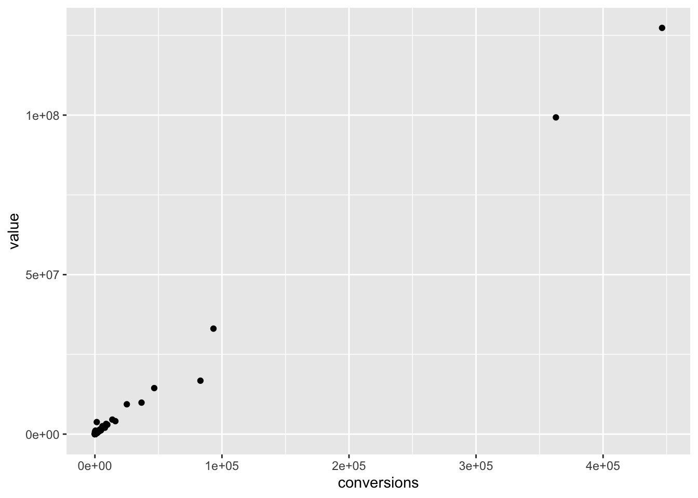
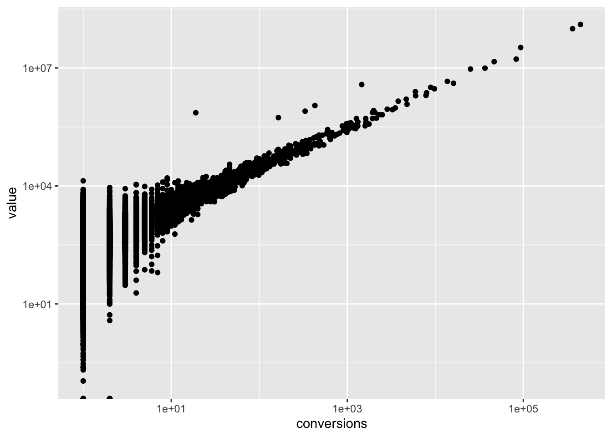
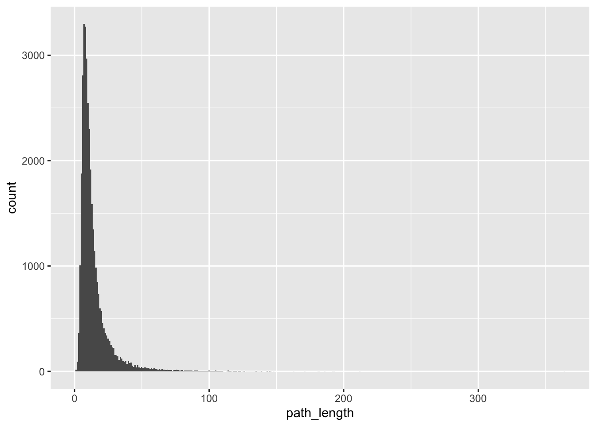
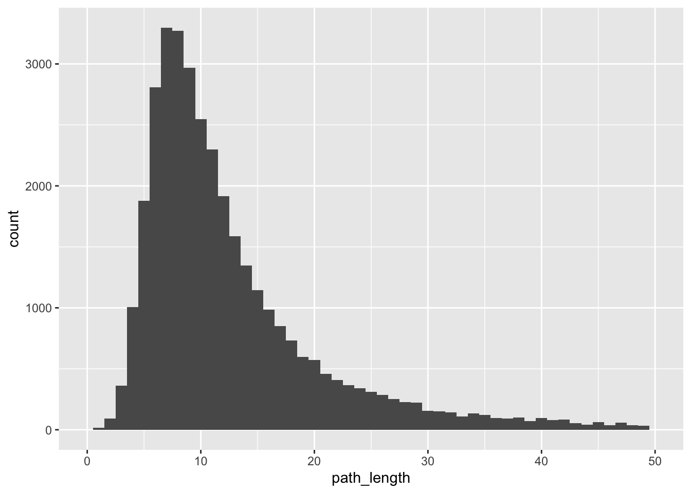
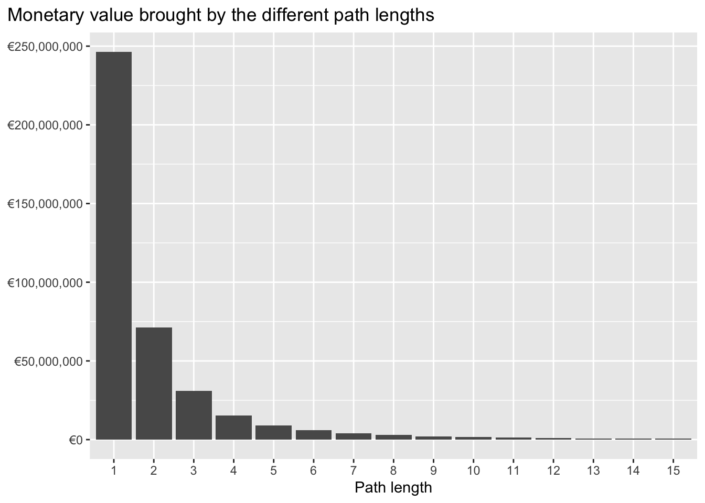
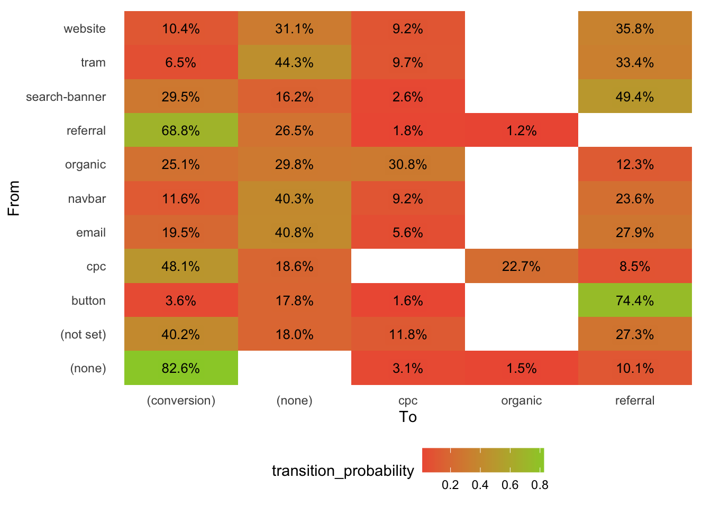
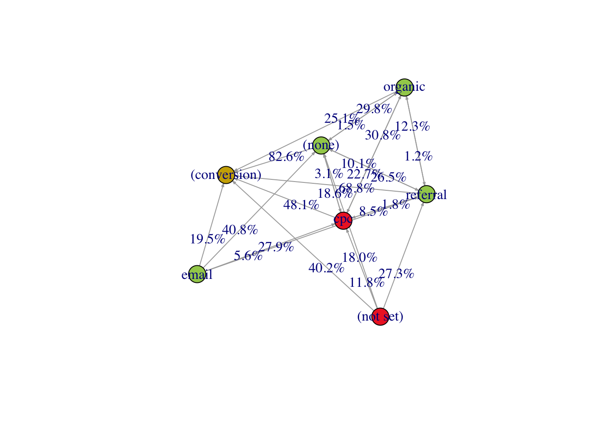
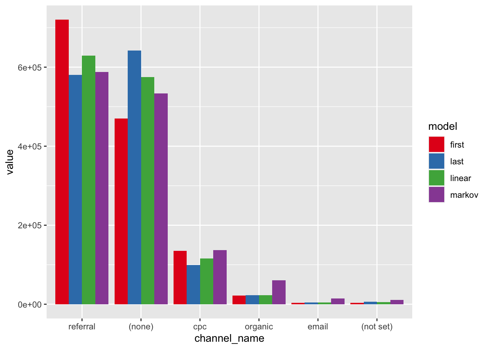
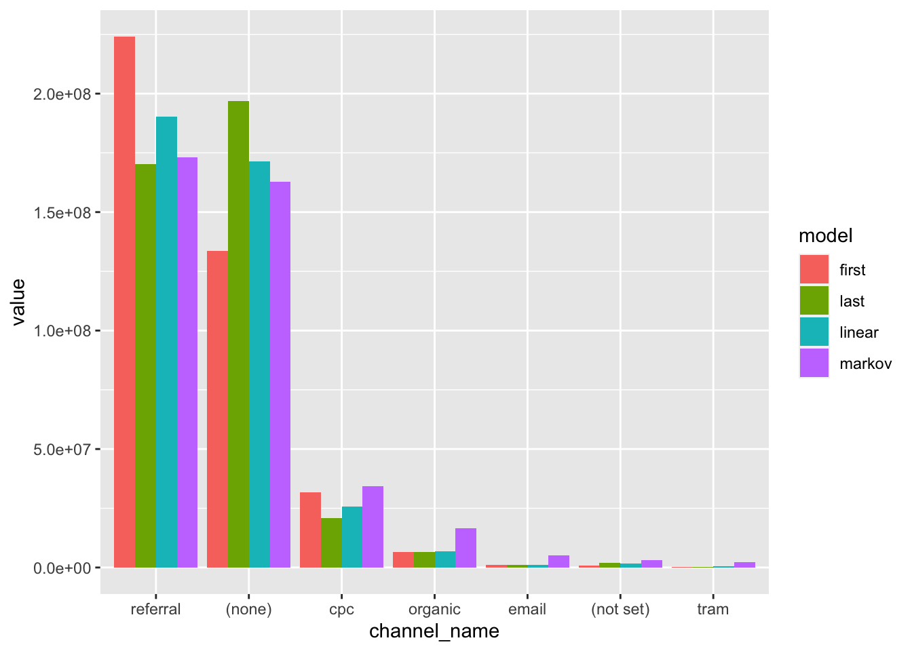

Conversion paths
In this section I plan to look at the conversion paths data export into more detail. The one big question waiting to be asked and answered with this kind of file export is - building a Markov model on the conversion paths and investigating the resulting network:
- how does it compare against the simpler heuristics like last touch / first touch ?
- here in particular it would be interesting to compare against the last touch as that would actually give us a eye-to-eye comparison of these 2 types of attribution models
- given that I have already seen the last-non-direct attributed view on the data from the
country_medium.csvfile, I am curious how would thereferralmedium perform in this view
- what do the Removal Effects say i.e. according to the Markov model - what % of the conversions would not have happened - had we removed a certain medium
- here also in particular it would be interesting to see how do the main contributors from the country/medium analysis fare against each other i.e. how do
referral, (none), organic, cpcdo in terms of their removal effects ? are some over-/under- valued ?
- here also in particular it would be interesting to see how do the main contributors from the country/medium analysis fare against each other i.e. how do
While these are the major points I expect to come out of this section, one other interesting thing could be
- check the distribution of the conversion path lenghts; what is the most usual length of touchpoints that customers go through before converting ?
The first section explores a bit the data and does some cleaning - feel free to jump to the more interesting parts:
- A look at the average number of steps it takes for a client to make a conversion on the client’s website
- Exploring the results from the Markov model, the transition probabilities, the removal effects and a comparison of heuristic vs. markov model conversion attribution results
Data exploration
Conversions are all 1s ?
Are all conversions a single 1 or is there variety in the data ?
Seems like most of conv. are 1s but perhaps there are some other values ?
Code
summary(conv_paths_raw$conversions) Min. 1st Qu. Median Mean 3rd Qu. Max.
1.0 1.0 1.0 36.4 1.0 446425.0 The summary shows that most are 1s but there are other values at the right tail end of the distribution. There are no 0 conversions, which is good.
I can convert them to integer numbers.
Code
conv_paths <- conv_paths_raw |>
mutate(conversions = as.integer(conversions))Value always in EUR ?
Separate the EUR from the numeric value and split them separately to check how they look like.
Code
conv_paths <- conv_paths |>
mutate(
value_splits = str_split(value, " ", n = 2),
currency = map_chr(value_splits, first),
value = {
map_chr(value_splits, nth, n = 2) |>
str_remove_all(",") |>
parse_number()
},
value_splits = NULL
)Is the currency of the value always in EUR ?
Code
conv_paths |> count(currency)# A tibble: 1 × 2
currency n
<chr> <int>
1 EUR 37332Yes, great I can safely drop this.
Code
conv_paths <- conv_paths |> select(-currency)How does value look like ?
Code
# 1
summary(conv_paths$value) Min. 1st Qu. Median Mean 3rd Qu. Max.
0 93 229 10665 548 127337281 The summary shows that value does have 0s , half of the data values are <= 229 and the right end of the tail looks like it is quite long / heavy.
How does this right-end of the tail look like ?
Code
quantile(conv_paths$value, seq(0.9, 1, 0.01)) |> comma() 90% 91% 92% 93% 94%
"1,259" "1,377" "1,519" "1,723" "1,993"
95% 96% 97% 98% 99%
"2,370" "2,930" "3,889" "6,498" "15,920"
100%
"127,337,281" Looks like we have suuuper heavy tail with some extreme values in the top percentiles.
I would like to see the top 10 medium paths ordered by descending conversion value.
Code
conv_paths |>
slice_max(order_by = value, n = 10) |>
datatable(options = list(dom = "t"))It looks like there are some “power” paths that provide massive part of the conversions / value.
Given the insights from the country/medium analysis - it’s not surprising that the single referral touchpoint is right at the top - with other paths where referral plays a role being also in the top 10.
Seeing also (none) and cpc in the top 10 makes me more curious about the Markov Model - I expect them to gain on importance in that overall view (as compared to the last non-direct view of the country/medium file).
One more thing I would like to check is the relationship of (conversion, value) pairs.
I will start with a simple scatterplot of their relationship.
Code
# how do conversions-value pairs look like ?
ggplot(conv_paths, aes(conversions, value)) + geom_point()
Not entirely sure what to think of this big hole in the middle, at first glance it looks bit unrealistic ?
Wondering if some scale-changes would show something ? Will try to log both axis
Code
ggplot(conv_paths, aes(conversions, value)) +
geom_point() +
scale_x_log10() +
scale_y_log10()Warning: Transformation introduced infinite values in continuous y-axis
Hm, ok … what catches the attention is the last warning about infinite values. This indicates that there are 0 value conversions ?
Code
conv_paths |>
filter(value < 1) |>
datatable(options = list(dom = "t"))Yes that is the case indeed … not sure if this is a “hiccup” in the data / export ?
What percentage of the rows have 0 value ?
Code
conv_paths |>
count(value == 0) |>
mutate(perc = n / sum(n))# A tibble: 2 × 3
`value == 0` n perc
<lgl> <int> <dbl>
1 FALSE 35743 0.957
2 TRUE 1589 0.0426about 4% of the rows are 0 value. How about in terms of conversions - what % of the conversions (which are all >= 1) have 0 value ?
Code
conv_paths |>
group_by(value == 0) |>
summarise(n = sum(conversions)) |>
mutate(perc = n / sum(n))# A tibble: 2 × 3
`value == 0` n perc
<lgl> <int> <dbl>
1 FALSE 1356737 0.999
2 TRUE 1617 0.00119Since it’s only 4% of the data and 0.12% in terms of conversions then i think it’s safe to simply remove these rows. It does not make sense to me to have conversion = 1 & value = 0 - perhaps it’s a cancellation ? In any case it shouldn’t cause any problems I assume.
Code
conv_paths <- conv_paths |> filter(value > 0)What are all possible mediums represented ?
Last thing i would like to check all the different mediums reprensented in this data export
Code
mediums <- conv_paths |>
select(medium_path) |>
separate_wider_delim(
medium_path,
delim = " > ",
too_few = "align_start",
names_sep = "_"
)
mediums |> map(unique)|> flatten_chr() |> unique() |> sort() [1] "(none)" "(not set)" "ads"
[4] "affiliate" "app" "article"
[7] "banner" "browser-notification" "button"
[10] "channel" "company_profile" "cpc"
[13] "Customer Service" "Customer+Service" "display"
[16] "email" "feed" "mailing_gui"
[19] "metasearch_api" "mobile-notification" "navbar"
[22] "organic" "paid-social" "peoplebasedmarketing"
[25] "ppd" "promocode" "referral"
[28] "s-cpm" "search-banner" "slack"
[31] "social" "Social" "social-media"
[34] "stories_banner" "test" "tram"
[37] "website" "whitelabel" "youtube"
[40] "zalo" From a first look it looks like the same mediums as in the country/medium file, nothing super interesting here.
Distribution of path lenghts
What might be also interesting to look at is the distribution of path lengths and - out of curiosity - i want to check what is the most common first medium touchpoint usually.
Maybe an idea would be to come up with some simple rules for buckets and see if these 2 differ
- the bulk of the path lenghts distribution would be centeres around some value
Le.g. - however - perhaps the bulk of the value is brought by another bucket e.g.
L + 10i.e. the bulk of the conversions are aroundLbut they are lower value conversions than bucketL + 10
These are some of the questions I expect to perhaps show some interesting things.
In terms of number of steps
How does the distribution of path lengths look like ?
Code
path_lengths <- conv_paths |>
mutate(
path_splits = str_split(medium_path, " > "),
path_length = map_int(path_splits, length),
first_touchpoint_medium = map_chr(path_splits, first)
) |>
select(path_length, first_touchpoint_medium, value)
ggplot(path_lengths, aes(path_length)) + geom_histogram(binwidth = 1)
It’s heavily right skewed with extremely long path lengths - apparently conversion paths of > 100 steps are also possible, although very unlikely. I want to zoom in around the peak of the distribution and see where it lies.
Code
ggplot(path_lengths, aes(path_length)) +
geom_histogram(binwidth = 1) +
xlim(0, 50)
It is centered somewhere around 7-9.
How does the right end of the distribution look like ?
Code
quantile(path_lengths$path_length, probs = seq(0.50, 1.00, 0.05)) 50% 55% 60% 65% 70% 75% 80% 85% 90% 95% 100%
10 11 12 13 14 16 18 21 26 36 364 - half of the conversions take
<= 10touchpoints to convert - 90% of the conversions take
<= 26touchpoints to convert
In terms of value
In terms of number of steps - the most common paths are 7-9 steps long, but how about in terms of value ? What are the path lengths that bring the most monetary value and are these the same ?
Code
path_lengths |>
group_by(path_length) |>
summarise(value = sum(value)) |>
filter(path_length <= 15) |>
ggplot(aes(x = as.factor(path_length), y = value)) +
geom_col() +
scale_y_continuous(labels = label_comma(prefix = "€")) +
labs(
x = "Path length",
y = NULL,
title = "Monetary value brought by the different path lengths"
) +
theme(
plot.title.position = "plot"
)
It seems like the path length is highly (negatively) correlated with the value it brings i.e. the longer the path - the less value we expect it to bring. I guess this makes sense ? I imagine a highly “unsure” customer that is hesitating and keeps “prolonging” the customer journey vs. a determined or decisive customer whose journey is more focused ( on the other hand i wonder if this is not always the case for every industry and business ?).
What % of the value is brought by path lengths of <= 10 ?
Code
path_lengths |>
group_by(path_length) |>
summarise(value = sum(value)) |>
mutate(
perc = value / sum(value),
cumul = cumsum(perc),
across(c(perc, cumul), percent_format(accuracy = 0.1))
) |>
datatable()~95% of the value is already brought by path lengths of <= 5 !
In any case - this view could be useful in some marketing optimisations i.e. if we would be able to determine the already-existing path length of a customer - then we could increase or decrease or marketing spend in order to nudge the customer or to save some costs (if we would be able to determing the customers whose journey already overstepped e.g. path length of 6 then we could chose to save these costs or re-invest them in remarketing to customers who are still at step 2 or 3 - as we know that small % of the value comes past this threshold).
Most common first medium
What is the most common first medium ? This one I picked out of curiosity to see how does the usual customer journey starts.
Code
path_lengths |>
count(first_touchpoint_medium, sort = T) |>
mutate(perc = percent_format(accuracy = 0.001)(n / sum(n)))# A tibble: 23 × 3
first_touchpoint_medium n perc
<chr> <int> <chr>
1 referral 15371 43.004%
2 (none) 9703 27.147%
3 cpc 6511 18.216%
4 organic 2282 6.384%
5 email 869 2.431%
6 tram 590 1.651%
7 (not set) 269 0.753%
8 s-cpm 47 0.131%
9 search-banner 44 0.123%
10 button 12 0.034%
# ℹ 13 more rowsAgain perhaps unsurprisingly as I saw in the country/medium analysis - referral is the 1st touchpoint for people ~45% of the time being the “power” medium drivers of customers - with (none) and cpc following behind.
Are there any duplicate rows in the data ?
Code
conv_paths$medium_path |> duplicated() |> sum()[1] 4743yes, so this means i have multiple rows with same medium path and different conversions and values, so I need to re-group-and-summarise by medium path the duplicates.
Code
conv_paths <- conv_paths |>
group_by(medium_path) |>
summarise(across(c(conversions, value), sum)) |>
ungroup()At this point I am content with the checks, cleaning and format of the file.
Markov model
I would like to fit a order-1 Markov Model to the conversion paths.
Code
library("ChannelAttribution")
markov_mod <- markov_model(
conv_paths,
var_path = "medium_path",
var_conv = "conversions",
var_value = "value",
out_more = T,
nsim_start = 1000000
)
Number of simulations: 1000000 - Convergence reached: 0.57% < 5.00%
Percentage of simulated paths that successfully end before maximum number of steps (357) is reached: 99.99%
[1] "*** Looking to run more advanced attribution? Try ChannelAttribution Pro for free! Visit https://channelattribution.io/product"Transition Matrix
Select only the top 10 to de-clutter the network
Code
top_mediums <- markov_mod$result |>
slice_max(order_by = total_conversions, n = 11)Code
# channel index <-> name
channel_index_to_name <- markov_mod$result |>
as_tibble() |>
select(channel_name) |>
rownames_to_column("channel_index") |>
deframe()
transition_matrix <- markov_mod$transition_matrix |>
as_tibble() |>
mutate(
channel_from = ifelse(
channel_from %in% c("(start)", "(conversion)"),
channel_from,
channel_index_to_name[ channel_from ]
),
channel_to = ifelse(
channel_to %in% c("(start)", "(conversion)"),
channel_to,
channel_index_to_name[ channel_to ]
)
) |>
semi_join(
top_mediums,
join_by(channel_from == channel_name)
) |>
group_by(channel_from) |>
slice_max(order_by = transition_probability, n = 4, with_ties = F) |>
ungroup()Heatmap
Code
transition_matrix |>
ggplot(aes(x = channel_from, y = channel_to, fill = transition_probability)) +
geom_tile() +
geom_label(
aes(label = percent_format(accuracy = 0.1)(transition_probability)),
label.size = NA,
alpha = 0.5,
size = 3.4
) +
scale_fill_gradient(
low = "tomato2",
high = "olivedrab3",
na.value = "cornsilk4"
) +
coord_flip() +
labs(x = "From", y = "To") +
theme_minimal() +
theme(
panel.grid.major = element_blank(),
panel.grid.minor = element_blank(),
legend.position = "bottom",
legend.direction = "horizontal"
)
Conclusions from this part
(N.B. the rows do not sum up to 1 because i trimmed some channels with very small transition probabilities in order to keep the network de-cluttered).
As suspected - quite some interesting and different views on customer conversions from this side.
- To end up in the
(conversion)state, the highest transition probability 82.6% is coming from(none). This means that - given that you had a direct click (or visit coming in directly by typing the website) - then the most likely thing that you will do next is to actually convert- Compare this with 68.8% coming from
referral- this means that if your last click wasreferralthen you h- this is in contrast to the country/medium view where
referralwas always dominating the shares
- this is in contrast to the country/medium view where
- to restate it bit differently
- there is a 1 in 1.21 chance that you will convert - if your last click was
direct. - there is a 1 in 1.45 chance that you will convert - if your last click was
referral - so having a
directclick increases your chances by 20% to convert
- there is a 1 in 1.21 chance that you will convert - if your last click was
- Compare this with 68.8% coming from
- from an
organicstate - it’s more likely that the path continues to acpcor(none)than to a(conversion)organicis an important middle-step in the customer journey that feeds the other mediums
- also conversely, crossing a
cpcpaid search touchpoint is most likely coming from anorganicsearch- after having organic search click - people do click on paid search ads
- thought/wonder - had the website converted them better at the organic search step - there would be no need to pay for the paid search ad, hence optimising the marketing spend ?
- after
referralone wold most likely either convert or continue to a(none)touch- following the referral click, people either convert or go on to visit the client directly - which probably means that they will most likely convert as the transition direct -> conversion is the highest
- in order to confirm this we need to look at the order-2 markov model and the transition probability of referral -> direct -> conversion
- following the referral click, people either convert or go on to visit the client directly - which probably means that they will most likely convert as the transition direct -> conversion is the highest
Graph
I found it a bit difficult to find an appropriate graph size and layout in order to be able to easily draw conclusions or see patterns and cliques in the data. It’s a pity that it just looks nice but it’s not super useful for most practical problems.
Code
library("igraph")
top_mediums <- c(
"(start)",
"(conversion)",
"(none)",
"(not set)",
"cpc",
"email",
"organic",
"referral"
)
transition_matrix <- transition_matrix |>
filter(
channel_from %in% top_mediums,
channel_to %in% top_mediums
)
network <- graph_from_data_frame(d = transition_matrix, directed = T)
V(network)$color <- case_match(
V(network)$name,
"(start)" ~ "darkslategray3",
"(conversion)" ~ "gold3",
"(none)" ~ "darkolivegreen3",
"email" ~ "darkolivegreen3",
"navbar" ~ "darkolivegreen3",
"organic" ~ "darkolivegreen3",
"referral" ~ "darkolivegreen3",
"(not set)" ~ "firebrick2",
"cpc" ~ "firebrick2",
"s-cpm" ~ "firebrick2"
)
plot(
network,
layout = layout_with_fr,
edge.arrow.size = 0.2,
edge.curved = F,
edge.label = percent_format(accuracy = 0.1)(E(network)$transition_probability)
)
Removal Effects
It’s important to keep in mind here what the removal effects mean. Imagine a linear conversion path
email -> direct -> conversion
Both of these channels have 100% removal effect because the conversion would not happen if we remove either of them. That’s why the following removal effects do not sum up to 100%.
Code
markov_mod$removal_effects |>
as_tibble() |>
filter(removal_effects_conversion_value > 0.0) |>
arrange(desc(removal_effects_conversion_value)) |>
mutate(across(starts_with("removal_"), percent_format(accuracy = 0.01))) |>
datatable()referralis getting over-valued in the country/medium (last non-direct) attribution model where it has the lion’s share of revenue consistently across all countries. even though it’s not the same measure - still the effect according to the Markov model is ~60% whereas it used to be more like ~80% in the country/medium view(none)/directis getting under-valued in the country/medium view, being credited there with only like ~8% of the revenue. In this view it is almost on par actually withreferral- so direct is almost the same value as referral - this is a huge change in value perspective (it is not the same value - but nevertheless direct went from getting ~8% of the value to ~54% of the value)
cpcseems to be very close in terms of attribution from both views- the order is the same but the % attributed value differs (at least for the top 2 mediums)
Heuristic Model
Code
heuristic_mod <- heuristic_models(
conv_paths,
var_path = "medium_path",
var_conv = "conversions",
var_value = "value"
)[1] "*** Looking to run more advanced attribution? Try ChannelAttribution Pro for free! Visit https://channelattribution.io/product"Code
markov <- markov_mod$result |>
rename(
markov_conversions = total_conversions,
markov_conversion_value = total_conversion_value
)
heuristic <- heuristic_mod |>
rename_with(
.cols = c(everything(), -channel_name),
str_remove,
pattern = "touch_"
)Code
top_mediums <-
markov_mod$result |>
slice_max(order_by = total_conversions, n = 6)
compare_models <-
left_join(markov, heuristic, join_by(channel_name)) |>
semi_join(top_mediums, join_by(channel_name)) |>
select(channel_name, ends_with("conversions")) |>
rename_with(
.cols = c(everything(), -channel_name),
str_remove,
pattern = "_conversions"
) |>
pivot_longer(
cols = -channel_name,
names_to = "model",
values_to = "value"
) |>
mutate(
channel_name = fct_reorder(channel_name, value, sum, .desc = T)
)
compare_models |>
ggplot(aes(x = channel_name, y = value, fill = model)) +
geom_col(position = "dodge") +
scale_fill_brewer(palette = "Set1")
Code
compare_models |>
ggplot(aes(x = channel_name, y = value, fill = model)) +
geom_col(position = "dodge") +
scale_y_continuous(labels = label_comma()) +
#scale_fill_viridis_d(begin = 0.01, end = 0.97) +
scale_fill_brewer(palette = "Set1") +
facet_wrap(~ channel_name, scales = "free") +
theme(
legend.position = "bottom",
legend.direction = "horizontal",
axis.text.x = element_blank(),
axis.ticks.x = element_blank()
) +
labs(
y = "# Conversions",
x = NULL
)
referralis generally less valuable as compared to the heuristic models, although it is practically the same as the last-touch model. It is getting a lot of value in the first-touch model which means it’s often quite high in the funnel / customer journey(none)is getting much less-valued in the first-touch vs. much more valued in the Markov and last-touch. This indicates that it is quite low in the funnel / customer journey, right at the end towards the conversion moment- it might be confusing why the direct channel got a big jump in attribution when comparing e.g. 8% from the country/medium view whereas here we saw the removal effect of 54%
- the fact that
(none)ordirectis less valued in the Markov model compared to Last model - while also having 54% removal effect is due to the fact that Markov model shares the conversions across the channels responsible for it - but all the channels in a conversion path get 100% removal effect due to the fact that the conversion would not have happened if we remove them all (imagine a linear conversion path with 2 channels and conversions - these both have 100% removal effect while also having 1/2 of the conversion)
- the fact that
- it might be confusing why the direct channel got a big jump in attribution when comparing e.g. 8% from the country/medium view whereas here we saw the removal effect of 54%
organicis much more valued in the Markov model than in the simpler ones - indicating that it is very instrumental in-between touch for a lot of the conversions- same could be said for
email, cpcalthough to a lower extent and on lower scale cpcseems to be same valued across first-touch and Markov which means it’s also probably more high in the conversion funnelorganicandemailare much more valueable in reality as the simpler heuristic models can attribute
The one big general takeaway from the whole section here is the importance of testing, comparing and using different models and ways of attributing value to different touchpoints in a journey. None of these models tells the whole truth on their own and it is important to “triangulate” the truth by using various models and ways to inspect the truth.
Moreover - it’s further closer to the truth not just different attribution models, but also completely different methods e.g. Attribution Models in addition to Marketing Mix Modelling in addition to Geo/Lift tests. Each and every one can uncover bits of reality and the power lies in combining these in order to measure the effectiveness of marketing.